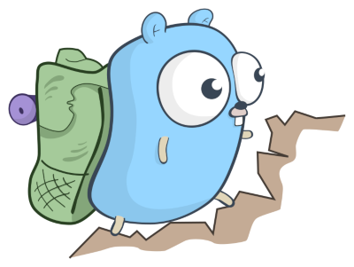

CSV para JSON com linguagem GO
Nesse texto será apresentado um exemplo de como como converter um arquivo CSV para JSON em linguagem GO.

Ao Trabalho! link original da imagem
Esse texto foi primeiro publicado na Revista /dev/all.
Dados reais para testes
Para projetos que estão no meu backlog pessoal (e que ainda não vou contar), preciso de uma certa quantidade de dados para fazer uns testes. Dessa forma, uma boa ideia é trabalhar com uma amostra dos arquivos do IMDb, conhecida como https://www.kaggle.com/carolzhangdc/imdb-5000. Ela tem uma quantidade razoável de registros, com dados que possibilitam trabalhar bem tanto em bancos de dados relacionais como NoSQL (meu foco agora são os NoSQL).
Assim, quando se precisa trabalhar com uma maior diversidade e quantidade de dados, um local fácil de achar coleções é o https://www.kaggle.com/, plataforma dedicada a desafios e competições no campo da ciência de dados, na qual estão disponíveis, além dessa amostra, muitos outros conjuntos.
Lendo o arquivo
Antes de mais nada, o primeiro desafio nessa jornada maior é pegar esses dados, que estão em arquivos CSV, e transformá-los em objetos JSON.
Antes de mais nada, deve-se ler o arquivo CSV:
package main
import (
"encoding/csv"
"fmt"
"io"
"os"
)
func main() {
f, _ := os.Open("fixture/movie_metadata.csv")
r := csv.NewReader(f)
for {
record, err := r.Read()
if err == io.EOF {
break
}
fmt.Println(record[11])
}
}
Primeiramente, o arquivo é aberto e o leitor de CSV é inicializado, então o arquivo é lido até o fim, imprimindo o campo correspondente ao título.
Módulos padrão da GOLANG
De acordo com o KISS, foram usados apenas módulos padrão:
encodig/csv: com esse módulo, lê-se conteúdo CSV.fmt: o bom e velho amigo responsável pelo output formatado.io: aqui se encontra a interfaceio.Reader.os: nesse módulo está o necessário para lidar com o sistema operacional. É desse pacote que vem a funçãoOpen, que implementa os métodos para a leitura do arquivo.
Inicialmente, Nessa primeira versão fiz o mínimo possível, deixando de lado coisas como passagem do nome do arquivo, verificar se ele existe e verificar se a entrada lida é válida.
A execução desse código gera uma saída que começa com:
go run loadscv.go | head
movie_title
Avatar
Pirates of the Caribbean: At World's End
Spectre
The Dark Knight Rises
Star Wars: Episode VII - The Force Awakens
John Carter
Spider-Man 3
Tangled
Avengers: Age of Ultron
Harry Potter and the Half-Blood Prince
Batman v Superman: Dawn of Justice
Superman Returns
signal: broken pipe
Perceberam o “broken pipe” na última linha? Falta um tratamento para erro na saída, mas isso é algo que irei trabalhar posteriormente.
Os dados
E o arquivo tem essa “cara”:
➤ head -2 fixture/movie_metadata.csv
color,director_name,num_critic_for_reviews,duration,director_facebook_likes,actor_3_facebook_likes,actor_2_name,actor_1_facebook_likes,gross,genres,actor_1_name,movie_title,num_voted_users,cast_total_facebook_likes,actor_3_name,facenumber_in_poster,plot_keywords,movie_imdb_link,num_user_for_reviews,language,country,content_rating,budget,title_year,actor_2_facebook_likes,imdb_score,aspect_ratio,movie_facebook_likes
Color,James Cameron,723,178,0,855,Joel David Moore,1000,760505847,Action|Adventure|Fantasy|Sci-Fi,CCH Pounder,Avatar ,886204,4834,Wes Studi,0,avatar|future|marine|native|paraplegic,http://www.imdb.com/title/tt0499549/?ref_=fn_tt_tt_1,3054,English,USA,PG-13,237000000,2009,936,7.9,1.78,33000
Os campos são:
color
director_name
num_critic_for_reviews
duration
director_facebook_likes
actor_3_facebook_likes
actor_2_name,
actor_1_facebook_likes
gross
genres
actor_1_name
movie_title
num_voted_users
cast_total_facebook_likes
actor_3_name
facenumber_in_poster
plot_keywords
movie_imdb_link
num_user_for_reviews
language
country
content_rating
budget
title_year
actor_2_facebook_likes
imdb_score
aspect_ratio
movie_facebook_likes
CSV para JSON
Agora é pegar esses dados e meter em um JSON bonitão. O módulo, padrão para isso é o encoding/json. Há até, no blog da linguagem GO, um texto de introdução ao uso de JSON.
Fazendo algo bem básico, só pra testar o novo módulo:
package main
import (
"encoding/csv"
"encoding/json"
"fmt"
"io"
"os"
"strconv"
)
type Movie struct {
Title string
Year int
}
func main() {
f, _ := os.Open("fixture/movie_metadata.csv")
r := csv.NewReader(f)
for {
record, err := r.Read()
if err == io.EOF {
break
}
year, _ := strconv.Atoi(record[23])
movieData := Movie {record[11], year}
movieJson, _ := json.Marshal(movieData)
fmt.Println(string(movieJson))
}
}
Executando:
➤ go run loadscv.go|head
{"Title":"movie_title","Year":0}
{"Title":"Avatar ","Year":2009}
{"Title":"Pirates of the Caribbean: At World's End ","Year":2007}
{"Title":"Spectre ","Year":2015}
{"Title":"The Dark Knight Rises ","Year":2012}
{"Title":"Star Wars: Episode VII - The Force Awakens ","Year":0}
{"Title":"John Carter ","Year":2012}
{"Title":"Spider-Man 3 ","Year":2007}
{"Title":"Tangled ","Year":2010}
{"Title":"Avengers: Age of Ultron ","Year":2015}
signal: broken pipe
Ao trocar o json.Marshal por json.MarshalIndent, tem-se uma saída mais amigável. Alterei, no código anteirior, o Marshal para movieJson, _ := json.MarshalIndent(movieData, “”, ” “), e obtive essa saída (a primeira linha do CSV é formado pelos nomes dos campos):
➤ go run loadscv.go |head -20
{
"Title": "movie_title",
"Year": 0,
"Actors": [
{
"Name": "actor_1_name",
"FacebookLikes": 0
},
{
"Name": "actor_2_name",
"FacebookLikes": 0
},
{
"Name": "actor_3_name",
"FacebookLikes": 0
}
]
}
{
"Title": "Avatar ",
signal: broken pipe
Alterando o comportamento
É possível configurar outros aspectos sa saída JSON, com metadados na definição do objeto. Por exemplo, se quisermos alterar o nome das chaves (os nomes são obtidos por reflexão, a partir do nome definido na estrutura), dado que os nomes públicos devem começar com letra maiúscula, o que não fica legal em uma saída JSON, basta informar esse nome na própria estrutura:
type Person struct {
Name string `json:"name"`
FacebookLikes int `json:"facebook_likes"`
}
type Movie struct {
Title string `json:"title"`
Year int `json:"year"`
Actors []Person `json:"actors"`
}
Obtendo, por exemplo, essa saída (peguei apenas a segunda entrada):
{
"title": "Avatar ",
"year": 2009,
"actors": [
{
"name": "CCH Pounder",
"facebook_likes": 1000
},
{
"name": "Joel David Moore",
"facebook_likes": 936
},
{
"name": "Wes Studi",
"facebook_likes": 855
}
]
}
Um outro modificador interessante é o omitempty, que não gera saída para campos considerados nulos (zero, falso, nil, entre outros). Usando ele para ano, deixaria a declaração para Year assim:
Year int `json:"year,omitempty"`
Aprimorando
As tarefas restantes para resolver esse problema, ainda temos, em cada linha do CSV, gêneros, com uma lista separada por | contendo palavras que tipificam o filme. Esses campos podem ter tratamentos diferentes em relações à sua normalização, e são especialmente interessantes por isso.
Como o que precisa ser feito ainda tem mais a ver com outros aspectos do GO, que não especificamente JSON, podem ser tratados normalmente, e para você, caro leitor, ficam como um desafio, especialmente para os que estamos iniciando nessa linguagem.
Outros materiais
Esses textos me ajudaram muito nessa empreitada: